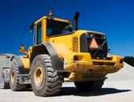
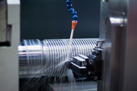
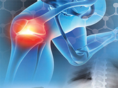

面向行业
-
航空业
Metalloid拥有航空和航天应用所需要的特种润滑剂技术。我们拥有的解决方案适用于那些必须耐受宽广范围温度、极端压力和酷烈环境的关键部件。我们润滑剂产品包括了针对范围宽广的航空航天业合金加工用高压冷却剂。我们的微量润滑剂技术通过配方设计，能够通过定制喷射系统喷射数量精密的最小用量润滑剂。我们是您的一站式来源，为航天和航空业范围广泛的应用提供了尖端解决方案。
-
汽车行业
Metalloid的金属加工润滑剂用于制造汽车行业的每一种金属部件。无论您要弯制消音弯头、深拉防热罩或在顺序冲模上冲压小型部件，我们都能为汽车制造业提供专业经验和高品质润滑剂精选产品。
-
汽车空调
Metalloid为汽车铝制换热器行业提供了润滑剂产品线：
Metalloid润滑剂设计用于减少加工机具与部件表面之间的摩擦力，并最终减少成型过程所产生的热量。这些润滑剂还具备传导作用力、将金属微粒从部件和加工机且表面排走的功能。减少摩擦力这方面属性就称为“润滑性”。
- FinMill产品系列： （适用于翅片、焊接和折叠管、联箱、侧支架和各种部件）
- *这些产品具备各种各样的闪点、润滑特性、蒸发速率和挥发度，能够配合任何作业的需要。
- *这些产品在化学工程设计上可用于制造各种部件，从轻负荷成型要求部件到重负荷复合部件。
- *这些润滑剂兼容保护气体钎焊（CAB）和镍铜焊工艺。
- *可按浓缩液形式或按精确浓度供应水基不含挥发性有机物（VOC）的产品以满足您的工艺需求
- *在许多情况下，可以取消水冲洗或热除脂步骤
- *许多产品可以无需除脂就能使用
- *根据产品选择，挥发性有机物（VOC）或在减少或消除。
- Metalloid聘用了行业最优秀的化学家和支持团队，并采用最新测试和筛选技术，帮助您选定最满足您需求的最佳产品。
- -我们采用Perkin Elmer热重分析仪来测定挥发性。
- -VOC测定采用Perkin Elmer ASTM测试方法E-1868-10，符合AQMD规则1144。
- -采用符合ASTM标准D 2670-95的Falex测试法来测定耐磨特性。
- -采用talloid公司专有测试方法测定蒸发速率。
-
武器/运动
Metalloid生产系列完整的环境安全型枪炮维护产品。我们的产品采用美国制造成份配方，这些成份对我们及我们共享的世界都具有环保安全性。我们的武器维护产品通过了美国农业部（USDA） BIOPREFERRED认证。这些产品将保持您的武器清洁并处于最高级使用状况下。
访问 www.metalloidfirearmsproducts.com网站，了解更多。
-

重型机械
Metalloid专门配方润滑剂可用于满足重型机械行业的严苛要求。无论您制造或使用平路机、拖拉机、联合收割机、前端装载机、反铲挖土机或推土机，Metalloid的金属加工液、防锈剂和润滑脂都能保护这些重新机械不受所处严酷工作条件的影响。在制造时采用Metalloid产品可以让重型机械运行性能更好并延长其使用寿命。
-

暧通空调
Metalloid的翅片冲压油（FinWorks）业务在这15年来持续成长，如今Metalloid已成为暧通空调及制冷（HVAC & R）制造用润滑液技术的全球领导者。Metalloid一直在满足和超越这一行业有关挥发性有机物（VOC）、石油基润滑液和/或“挥发性”润滑剂的相关标准。我们专长于通过液体化学和设备应用来减少液体废物。
-

机加工
Metalloid生产着系列完整的机加工冷却剂产品，这些产品可用于对任何金属的任何机加工作业。我们的冷却剂以可溶油、半合成和合成配方形式提供。除了传统机加工冷却剂以外，Metalloid还是机加工业环保技术的领导者。我们将与您加工厂技术人员合作设计一项专为您具体机加工作业设计的冷却剂管理计划。我们将供应辅助设备以及特种添加剂用于加工中心（CNC）或中央冷却剂系统的集液池维护。我们处于当今先进水平的机加工实验室将为您提供服务和冷却剂样品评估支持以及更多帮助。
-

医疗行业
Metalloid是您的医疗设备、牙科设备和医疗器械润滑剂合作伙伴。我们的产品配方包括了专用润滑液，可用于制造范围宽广的医疗设备，适用于各个医学专科，包括：
- • 人工髋关节和关节部件
- • 脊椎部件 – 椎弓根螺钉和螺杆
- • 假体植入物
- • 牙科植入物
- • 医疗工具和设备
-
管材制造
Metalloid专门生产管材成形用润滑剂产品，可用于所有金属管材的弯管、拉管、扩管、轧制和端头成形。我们的管材成形润滑剂通过配方增强了管材的可焊性和表面加工作业能力。除了传统润滑剂产品之外，我们还提供完整系列的环保技术解决方案。
-

拉丝制造
Metalloid的WireWorks系列润滑剂能够在不使用石油基润滑油或皂粉的条件表现出优异的湿拉或干拉性能。WireWorks品牌提供了多项通过美国农业部BioPreferred认证的环保技术选择。WireWorks系列提供了能够直接退火、容易清洗并对人和环境安全的产品。无论您采用何种拉丝工艺，选择WireWorks润滑剂都能改善您的工艺。